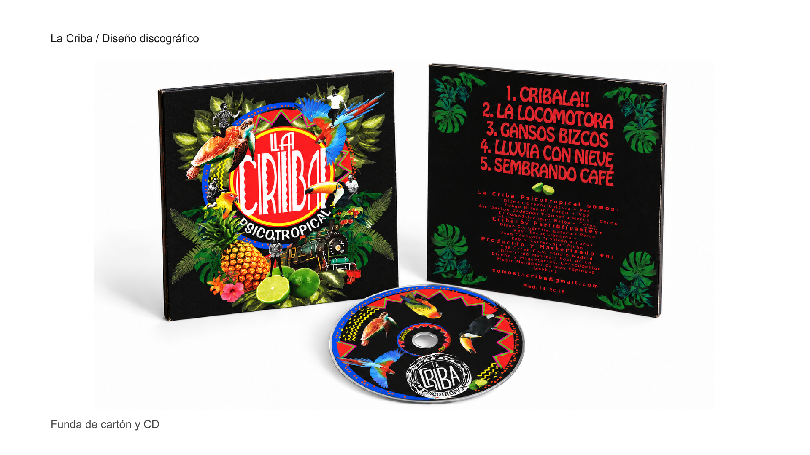
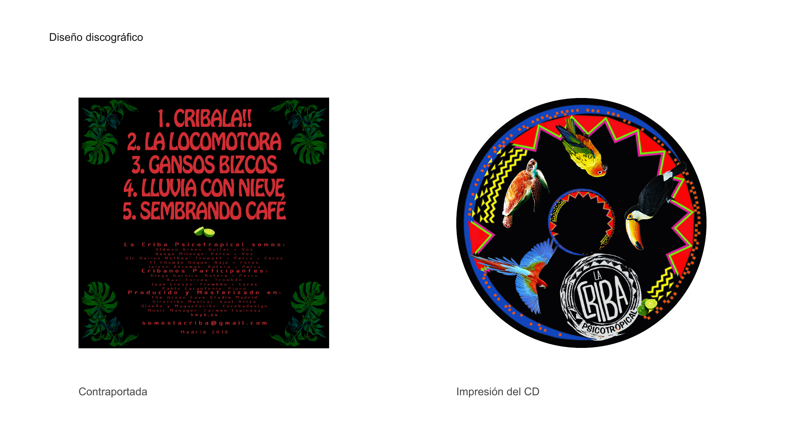
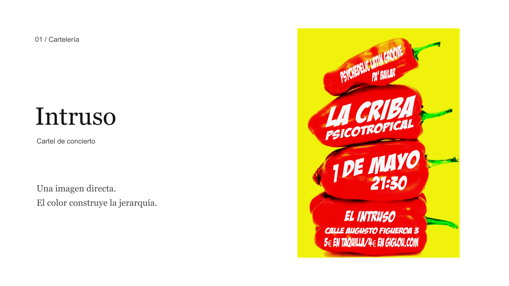
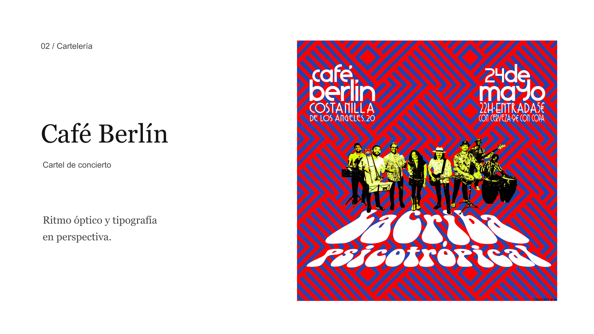

DISEÑO DISCOGRÁFICO / COMUNICACIÓN MUSICAL
La Criba
Una identidad gráfica para la música de La Criba Psicotrópical. La edición del disco y la comunicación de conciertos se presentan aquí en cuatro piezas seleccionadas.
El disco como conjunto
Portada, contraportada y superficie del CD: composición, relación entre imagen y texto y adaptación a los distintos soportes de la edición.



